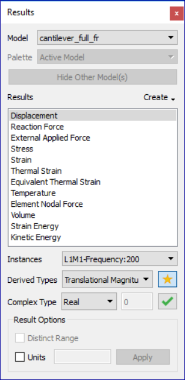
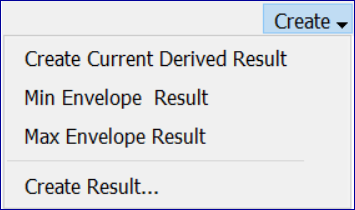
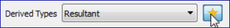
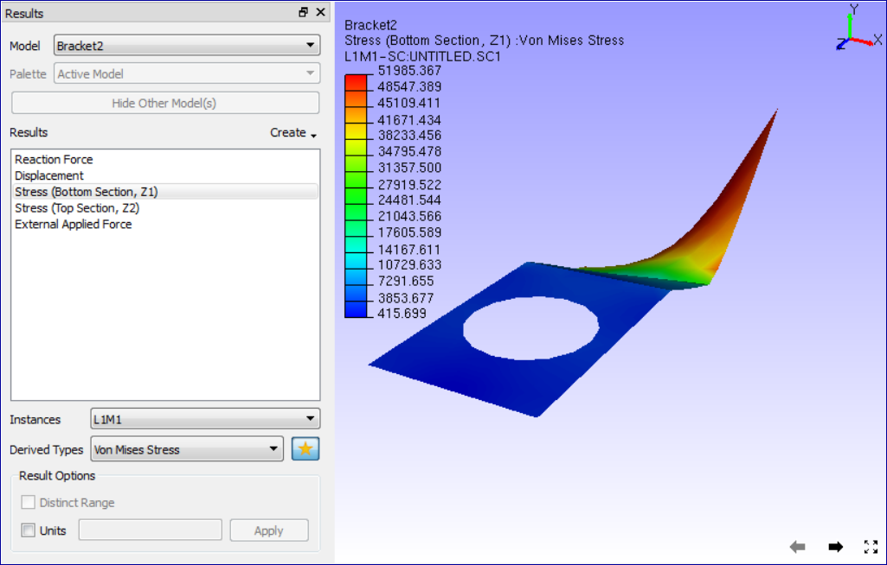
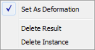
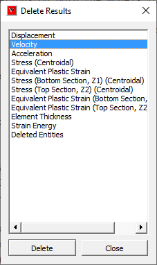
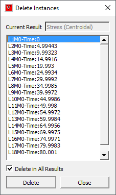

Results¶
This command helps user to choose a result, a derived type and load and mode cases for all CAE models.
Note
Complex results are handled with user interfaces.
What is CAE Model?
A CAE Model refers to a set of CAE results belongs to one geometry.
CAE Results Panel

Model lists all CAE models available in the scene. It would contain more than one dataset if user merged more models into the scene.
Create drop-down lists the following functions based on current selection result type,

Create Current Derived Result creates a new scalar result extracted from current contour result. New result name is concatination of old result name and its derived type.
Min Envelope Instance creates an instance result which is computed for minimum result value of all instances at each node. The instance name would be of the form Envelope_Min_[Derived_Result_Name]. For example, if the derived type is ‘Resultant’ of vector type, then it will be Envelope_Min_Resultant. This is applicable only for non-complex transient result.
Max Envelope Instance creates an instance result which is computed for maximum result value of all instances at each node. The instance name would be of the form Envelope_Max_[Derived_Result_Name]. For example, if the derived type is ‘Resultant’ of vector type, then it will be Envelope_Max_Resultant. This is applicable only for non-complex transient result.
Max Von mises Harmonic allows user to create stress tensor using von mises maximum Eigen angle. This options will be enabled only for complex eigen stress result. Angle for the tensor is computed for maximum von mises stress. Von mises stress attains maximum for two angles between 0 to 360 degrees. Out of these two angles, VCollab considers the angle which results in greater maximum principal value.
‘Create Result…’ option pops up Create Result dialog.
Results List Box lists all results for the selected data set. User is allowed to select any one of the results listed. Default selection is first result in the list. Instance drop down lists load cases and mode cases. “L1M1” is referred as Load Case 1 and Mode Case 1. Derived Type drop down lists all possible derived types based on the result type selected in the Result List Box. Default selection is,
“Translational Magnitude” for vectors
“Von Mises Stress” for Tensors and
None for Scalar result
Default Derived Type (Star icon)
Next to dropdown list, Star icon indicates if derived type is a default one or not. Selected derived item is default type if Star icon is in gold color, else in grey color. User can select any derived item and make it default derived type by clicking the Star icon. Whenever user selects a result, this default derived type is selected and applied for contour.

Complex Type is enabled only for complex eigen data and lists the following complex components.
Real
Imaginary
Magnitude
Phase
Angle (User has to enter phase angle value).
Angle in Degrees refers to user defined phase angle value. This is applicable for complex eigen result. Default angle is zero.
Result Options allows user to edit legend type and result units.
Distinct Range |
This is one value - one color map for contouring results. This option is applicable only if result unique values are less than 32. Otherwise this option will be in disabled form. |
Units |
This option allows user to edit and set units for selected result. |
Apply |
Applies the result option modification for current selected scalar result. |
The following three options will be enabled and visible if two or more models exist or merged. Palette Options
Active Model Only the current model will be active. A single color palette for the active model will be displayed. The active model will be displayed with color plot and all other models will be displayed in part color.
Multiple Multiple models will be active. Each model will be displayed with its own color palette and result.
Combined In this mode all models are displayed using a current model palette and results. Only the common palette is displayed. The result list will display only common results. The changes to palette/legend parameters are applied to all models..
Note: Default palette option is Active Model.
Hide Other Model(s) hides all other models except current model in the scene.
Combined Palette option
Responds to both datasets for ‘CAE Results’ dialog events, usually not.
Applies current dataset palette on the existing datasets
Applies No-Result value, if user clicked result is not available for other datasets.
Animates both datasets for common result selected.
If any dataset does not contain user selected result, no linear animation exists for the dataset.
Allows user to probe all datasets.
Allows user to save this state into viewpoint states.
Benefits
User can merge two datasets with similar geometry and compare the CAE results.
Visualize the differences on CAE design through linear and transient animations
User can probe both models and compare nodal results.
User can save the compared results into cax as viewpoint states
Contour and Legend
VCollabPro computes CAE contour values for visible parts only, while changing the result.
Changing visibility of one or more parts leads to change in contour and legend min/max values.
Computed color information is applied to the model for contour values.
How to select a result?
Load sample file, barcket2.cax.
Click ‘CAE Results’ icon
in the CAE toolbar.
Click ‘Stress’ result from the list.
Choose ‘L1M1’ instance from the Instance drop down list.
Choose ‘Mean Stress’ derived type from the ‘Derived Type’ drop down list.
Observe the changes in the model as well as in the text information in the viewer as below.
Observe that deform result is still ‘Displacement’, even though different result is selected.
Select “Set As Deform Result” from the context for current selection.
View the deformed result for current selection of result. 
How to use Combined Palette option?
Load a CAx file, which contains CAE dataset.
Merge another cax file, which contains same geometry but different CAE dataset results.
If both model geometry coincides in scene, move one of them away using ‘Transform’ option in product tree context menu.
Click ‘CAE | Result List’,
Select ‘Combined’ option to apply current palette for both the datasets.
Now user can do all CAE operations on both the models to compare CAE results.
For example, probe same node in both the models and compare the nodal results.
Result Context Menu

- Set As Deform Result
User can set any vector type result as deformation result. Whenever user selects any of the following vector type results, it becomes deformation result automatically.
Displacement
Displacement - Vibration Mode
Deformation
- Delete Result
Allows user to delete multiple results. It prompts for confirmation.
- Delete Instances
Allows user to delete a set of instances either to all results or a selected result. user can delete multiple instances.
How to delete results or instances?
Select a result in the list.
Right click or click using right mouse button.
It drops down a context menu.
Select Delete Result option.
It pops up Delete Results dialog.

Selects the results to be deleted and click ‘OK’
It prompts before deletion of results.
Click Yes to delete or No to cancel.
Select Delete Instances option.
It pops up Delete Instances dialog.

It shows the result name user selected.
Select multiple instances using shift or control and mouse.
Check Delete in All Results option to delete the selected instances in all results if it presents.
Uncheck Delete in All Results option to delete instances for the selected result only.
Click Delete button to continue or Cancel to cancel the process.
How to set and view deform results of vector type?
Load a CAx file
Click ‘CAE | Result List’ menu item
Default deformation result is “Displacement”
Select any other vector type result.
Click ‘Set As Deformation’ item in the right click context menu.
Notice the changes in viewer.